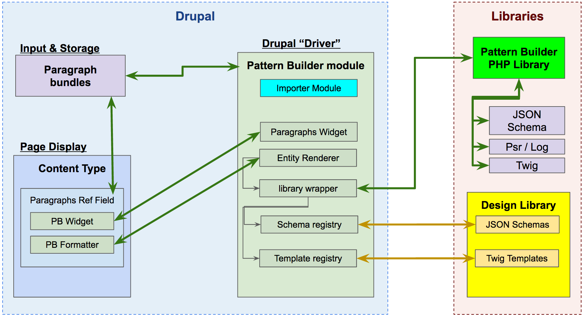

Pattern Builder Drupal Module
What is it?
The Pattern Builder Module empowers your team to prototype in a static pattern library and then import the designs and content data model into Drupal with a single drush command.
Need to update your design? No problem! Just update and QA the code in your pattern library and import those changes to Drupal in seconds.
System Architecture

Why
-
The Pattern Builder System empowers us to create a design system out of JSON schemas and Twig templates. To do this efficiently we need a tool that allows us to quickly prototype, build and validate our content structure and visual design.
-
It is important that developers and stakeholders have access to the growing design system.
Where
- Drupal.org: https://www.drupal.org/project/patternbuilder
- GitHub: https://github.com/PatternBuilder/pattern-builder-drupal
Setup
The Pattern Builder module contains a composer.json to build the library dependencies. Below are some options to integrate the patternbuilder module into a project.
-
Composer Manager Module: https://www.drupal.org/project/composer_manager
- Install the composer_manager module.
- Download and install the patternbuilder module:
drush en -y patternbuilder - See the Composer Manager's documentation for more commands.
-
Git clone / Drush Make file
- Clone repo to the site's modules directory (Example: "sites/all/modules").
- Run
composer installwithin the patternbuilder module's directory.
How
JSON Schema Support
-
Property "uniqueId"
If the schema defines a "uniqueId" property, then the property value is set to the paragraph entity's item id during the rendering process.
Troubleshooting
All errors and warnings are logged via the Drupal watchdog() function. One of the following modules should be enabled on the site:
- Database logging (dblog):
- Drupal configuration: "/admin/config/development/logging"
- View logs: "/admin/reports/dblog", filter by type = "patternbuilder"
- Syslog (syslog):
- Drupal configuration: "/admin/config/development/logging"
- View logs: Logs are available in the server log files, search for logs with "patternbuilder". Actual location depends on the server's config for syslog.
Log Messages
WARNING: 'Duplicate schemas found for "my_schema" at "file:///path/to/schemas-alternative/my_schema.json". The first schema registered will be used until this conflict has been resolved. Active schema: "file:///path/to/schemas/my_schema.json"'
The Pattern Builder module allows multiple schema directories to be defined at "admin/config/content/patternbuilder". This message is logged when there is a schema file with the same name in multiple directories.
- Check that the schema directories are configured correctly at "admin/config/content/patternbuilder".
- Verify the schema files in the directories.
ERROR: 'An error occurred while rendering the "pbi_my_schema" paragraph item (id:1, revision:22) on node (id:234, revision:6788): Unable to find template ".twig" (looked into: /var/www/html/path/to/schemas, /var/www/html/path/to/schemas-alternative) in "my_band.twig" at line 61.
The error log "An error occurred while rendering ..." occurs during rendering of the field formatter typically on the node page. This error is logged for any error occurring in the Pattern Library rendering of the schema and TWIG template.
This is a silent error so that it does not stop the rendering of the rest of patterns and the Drupal page. The failed pattern will not be displayed on the page.
A common error is displayed above. This is an error when a TWIG template includes another template without specifying a file name.
TODO
Install Options: (NEEDS CLEANUP) install patternbuilder module, composer install in the patternbuilder module folder + install composer_manager
OR
install patternbuilder module, clone patternbuilder-lib-php into libraries and then composer install from there